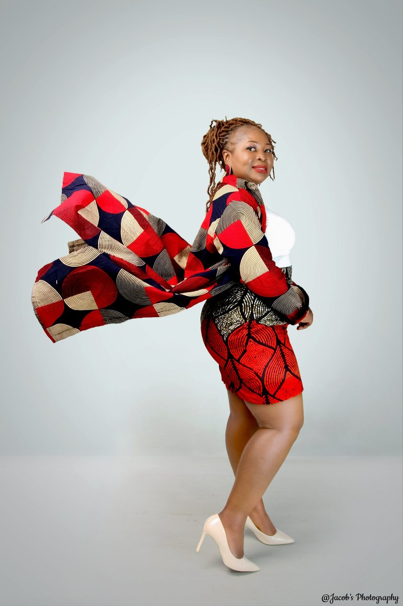

Dr. Racheal Kalaba
Dr. Racheal Kalaba is a Bemba and Lunda scholar-practitioner from Zambia and the scholar who coined Ubuntu Womanism. With over fifteen years of professional experience across international development, education, youth leadership, and health sectors, she brings to every engagement a depth of practice that is rare among scholars of her generation. She has not only theorised transformation: she has coordinated it, governed it, evaluated it, and been accountable for it across some of the most complex institutional and community environments in the world.
Her fieldwork spans more than forty adolescent girls across four schools in Kitwe District, Zambia; research produced for the Brookings Institution and academic journals; internationally benchmarked curriculum for girls' leadership programs; and sustained partnerships with governments, multilateral agencies, foundations, academic institutions, and communities across more than twenty countries. Her scholarly collaborators include Professor Njoki Wane (OISE, University of Toronto) and Professor Mariem Lo.
She Leads Because We Are
Working Alongside the Founder
A Leader Held Accountable at Every Level
Echidna Global Scholar
Brookings Institution, Centre for Universal Education — 2025
Vice Board Chairperson
Zambia Ministry of Health — national health governance and policy oversight
Board Member & Gender/Disability Committee Lead
Zambia National Youth Development Board — national youth policy and inclusive governance
Best Female Leader, Copperbelt
Zambia Youth Achievers Organisation Awards, 2017
Elected World Treasurer
MIJARC — International Rural Youth Movement. A global social movement spanning multiple continents.
Africa Youth Awards in Education
Nominated and Shortlisted, 2016 and 2017
Begin a Conversation
We listen before we respond. Tell us about the change you are working towards.
Contact Us